금속재료기능장 (2007-07-15 기출문제)
1과목: 임의 구분
1. 다음 중 Al합금의 질별기호에서 T6란 어떠한 열처리인가?
- 고온가공에서 냉각 후 자연시효한 것
- 담금질 후 안정화 처리하여 자연시효한 것
- 용체화처리 후 인공시효 경화처리한 것
- 고용화처리 후 다시 냉간가공한 것
(정답률: 58%)

2. 탄소의 함량이 0.42∼0.48%인 SM45C 재질의 담금질(quenching) 온도로 가장 적당한 것은?
- 약 100∼150℃
- 약 450∼500℃
- 약 820∼870℃
- 약 1⑤0∼1100℃
(정답률: 74%)
3. 로 내 분위기 가스 중 환원성 가스로 옳은 것은?
- CO2
- NH3
- N2
- O2
(정답률: 52%)
4. 다음 소결한 복합합금 중 초경합금이 아닌 것은?
- Widia
- Tangaloy
- Carboloy
- Platinite
(정답률: 96%)
5. 다음 중 Ni 합금이 아닌 것은?
- Inconel
- Permalloy
- Elinvar
- Gilding metal
(정답률: 82%)
6. 자분탐상시험에 대한 설명 중 옳은 것은?
- 오스테나이트강의 시험에 좋다.
- 자속과 평행한 방향의 균열은 검출하기 쉽다.
- A형 표준시험편은 인공 홈이 있는 면이 시험면에 잘 밀착되도록 붙인다.
- 자분분산 농도는 10kg의 검사액 중에 분산되어 있는 자분의 밀도를 말한다.
(정답률: 83%)
7. 방사선투과검사시 노출인자를 구하는 식으로 옳은 것은? (단, I: 관전류[mA] 또는 선원의 강도[Bq], t: 노출 시간[s], d: 선원 필름사이의 거리[m])
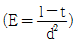
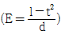
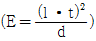
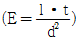
(정답률: 71%)
8. 초음파탐상시험에서 사용되는 탐촉자 중 위상 배열탐촉자에 대한 설명으로 옳은 것은?
- 액체에서 사용할 수 있도록 특벼리 설계된 종파탐촉자이다.
- 자기유도 효과로부터 전기적 진동을 음파에너지로 바꾸거나 그 역으로 바꿀수 있는 탐촉자이다.
- 잡속빔이나 초점을 만드는 특별한 장치에 의해 초음파빔이 접촉되는 탐촉자이다.
- 각각 다른 진폭으로 독자적으로 작동할 수 있는 여러개의 요소 진동자로 구성되어 다양한 빔의 각도와 집속거리를 가질 수 있는 탐촉자이다.
(정답률: 85%)
9. 용접 내부의 블로우홀(blow hole)을 검출하는데 있어서 가장 적합한 비파괴시험법은?
- PT
- LT
- ET
- RT
(정답률: 90%)
10. 고주파 열처리 작업 중 조업안전에 대한 설명으로 틀린 것은?
- 전원투입은 순서를 정확히 지킨다.
- 보안설비의 작동을 규정된 방법에 따라 확인한다.
- 전원부 및 발진부는 작업 중 접근하여 점검한다.
- 보수 및 점검시는 반드시 전원스위치를 끊고 작업한다.
(정답률: 88%)
11. 염욕 열처리작업시 주의해야 할 사항으로 틀린 것은?
- 홀더는 완전한 것을 사용할 것
- 염(Salt)주변에 물을 뿌려가면서 작업할 것
- 반드시 소정의 보호구를 착용할 것
- 배기용 팬은 사용전 충분히 점검할 것
(정답률: 96%)
12. 비파괴시험의 안전관리 사항으로 틀린 것은?
- X선 조사실 주위에 다른 사람들이 접근하지 못하도록 통제한다.
- X선 장치는 고전압이 작동되므로 감전에 주의한다.
- 자분탐상시험시 자외선등에 의한 빛은 발생되지 않으므로 보호안경은 착용하지 않아도 된다.
- 침투탐상시험시 휘발성 가스 또는 유기 용제를 취급할 때 피부 및 기타 인체에 손상이 없도록 주의한다.
(정답률: 95%)
13. 고속도 공구강의 담금질 온도의 범위로 가장 옳은 것은?
- 약 110∼120℃
- 약 750∼850℃
- 약 900∼1000℃
- 약 1200∼1350℃
(정답률: 67%)
14. 저탄소강을 침탄하여 침탄층의 경도를 측정하고자 할 때 사용하는 가장 적합한 경도계는?
- 브리넬 경도계
- 비커스 경도계
- 마이어 경도계
- 쇼어 경도계
(정답률: 74%)
15. 오스테나이트 상태에서 Ar‘와 Ar'' 사이에 유지된 염욕에 담금질하여 과냉 오스테나이트가 염욕 중에서 항온변태가 종료할 때 까지 항온유지시키고, 공기 중으로 냉각하는 열처리 방법은?
- 오스템퍼링(Austempering)
- 마퀜칭(Marquenching)
- 항온뜨임(Isothermal tempering)
- 타임퀜칭(Time quenching)
(정답률: 84%)
16. 침투탐상검사에 사용되는 현상제가 갖추어야 할 특성으로 틀린 것은?
- 흡수력이 큰 재료일 것
- 점성이 클 것
- 미세한 입자 모양을 갖출 것
- 형광 침투제를 사용할 경우 비형광일 것
(정답률: 84%)
17. 약 0.77% 탄소강을 일정온도에서 오스테나이트화 한 후 약 300℃의 염욕에서 담금질 하여 15분 유지한 다음 수냉하였을 때 나타나는 조직으로 옳은 것은?
- 페라이트
- 시멘타이트
- 하부베이나이트
- 잔류오스테나이트
(정답률: 84%)
18. 재료의 결함검사 중 데시벨(dB)이 사용되는 비파괴시험으로 옳은 것은?
- UT
- RT
- PT
- LT
(정답률: 73%)
19. 순철에서 나타나는 동소체와 그에 따른 결정격자를 올바르게 나타낸 것은?
- α-Fe : FCC
- γ-Fe : FCC
- δ-Fe : FCC
- ε-Fe : FCC
(정답률: 75%)
20. 다음의 실용황동 중 문쯔 메탈(Muntz metal)의 조성으로 옳은 것은?
- 60%Cu-40%Zn 합금
- 80%Cu-20%Zn 합금
- 90%Cu-10%Zn 합금
- 95%Cu-5%Zn 합금
(정답률: 84%)
2과목: 임의 구분
21. 침투탐상검사법의 특징으로 틀린 것은?
- 표면의 미세한 결함도 쉽게 검출할 수 있다.
- 표면이 거친 시험체나 다공성 재료는 검사가 어렵다.
- 결함의 깊이, 내부의 모양 및 크기를 알 수 있다.
- 금속 및 비금속에 관계없이 거의 모든 재료의 표면에 적용할 수 있다.
(정답률: 77%)
22. 실루민(Silumin)의 개량처리에 사용되는 것이 아닌 것은?
- 나트륨
- 플루오르화 알칼리
- 마그네슘
- 수산화나트륨
(정답률: 58%)
23. 주철의 ASTM 기준 형태에서 미세한 공정상 흑연이 나타나는 형태로 냉각속도가 아주 빠르고 규소가 많이 함유된 것은?
- A형
- C형
- D형
- E형
(정답률: 73%)
24. 강을 분류할 때 공석강의 탄소함량은 약 몇 %인가?
- 0.025
- 0.8
- 2.1
- 4.5
(정답률: 80%)
25. 강 중에 포함되어 쾌삭성을 높이기 위한 첨가 원소가 아닌 것은?
- S
- Pb
- Se
- Cr
(정답률: 76%)
26. 현미경 배율 100배에서 강의 페라이트 결정립의 수를 측정한 결과 1평방인치(25.4mm)2 중에 256개 였을 때 페라이트 결정입도 번호는?
- 1
- 5
- 7
- 9
(정답률: 79%)
27. 다음 중 질화법에 대한 설명으로 틀린 것은?
- 가스 질화는 500∼550℃의 온도 범위에서 처리하여 열 변형이 적다.
- 질화용강은 질화 전에 조질열처리를 해야 한다.
- 질화처리한 강은 인장강도 및 항복강도는 낮고, 충격값은 높아진다.
- 가스 질화처리는 다른 질화처리에 비하여 처리시간이 비교적 길다.
(정답률: 70%)
28. 고속도 공구강의 대표적인 18-4-1 형의 조성으로 옳은 것은?
- Cr18%-W4%-V1%
- W18%-V4%-Cr1%
- W18%-Cr4%-V1%
- V18%-W4%-Cr1%
(정답률: 85%)
29. 직경 25mm의 봉재를 A3+30℃까지 가열한 후 수냉을 실시할 때 냉각의 3단계 순서로 옳은 것은?
- 비등단계-증기막단계-대류단계
- 증기막단계-비등단계-대류단계
- 비등단계-대류단계-증기막단계
- 대류단계-증기막단계-비등단계
(정답률: 96%)
30. 알루미늄 및 알루미늄 합금의 현미경 조직 검사용 부식액으로 옳은 것은?
- 질산 알콜 용액
- 피크린산 알콜 용액
- 염화제2철 용액
- 수산화나트륨 용액
(정답률: 86%)
31. 다음 중 금속계 복합재료가 아닌 것은?
- 섬유 강화 금속
- 분산 강화 금속
- 입자 강화 금속
- 석출 강화 금속
(정답률: 77%)
32. 같은 크기의 결함이 존재할 경우, 초음파탐상시험에 의하여 찾아내기 가장 쉬운 결함은?
- 이종 물질의 혼입
- 재료 표면의 미세 결함
- 초음파 진행방향에 평행인 결함
- 초음파 진행방향에 수직인 결함
(정답률: 87%)
33. 공학적 설계를 지원하기 위한 컴퓨터 지원 설계(CAD)시스템을 사용하는 중요한 이유가 아닌 것은?
- 공정계획의 단순화
- 생산 데이터베이스의 생성
- 설계의 생산성 증가
- 설계의 질 향상
(정답률: 72%)
34. 되먹임 제어에서 서보기구의 구성방식 중 높은 정밀도를 얻을 수 있으며, 출력의 일부를 입력 방향으로 피드백(feed back)을 행하는 방식은?
- 개방회로방식(open loop system)
- 폐쇄회로방식(closed loop system)
- 반폐쇄회로방식(semi-closed loop system)
- 하이브리드서보방식(hybrid servo system)
(정답률: 64%)
35. 다음 중 CNC 머시닝센터의 특징으로 틀린 것은?
- 소형 부품은 1회에 여러 개 고정하여 연속 작업을 할 수 있다.
- 형상이 복잡하고 다양한 제품에 대한 가공에는 어려움이 많다.
- 한 사람이 여러 대를 가동할 수 있어 인력이 적게 소요된다.
- 컴퓨터에 내장된 NC로 메모리(Memory) 작업을 할 수 있다.
(정답률: 77%)
36. 다음 용적형펌프 중 회전펌프가 아닌 것은?
- 기어펌프
- 원심펌프
- 나사펌프
- 베인펌프
(정답률: 62%)
37. 다음 중 내력을 구하는 방법이 아닌 것은?
- 오프셋법
- 영구연신율법
- 전체연신율법
- 파단연신율법
(정답률: 75%)
38. 다음 중 순철의 A3 변태에 대한 설명으로 옳은 것은?
- [α]↔[γ] 변태이다.
- 자기변태를 설명한 것이다.
- 변태는 1400℃에서 일어난다.
- 변태 완료 후 펄라이트 조직이 얻어진다.
(정답률: 80%)
39. 다음 중 두랄루민에 대한 설명으로 가장 관계가 먼 것은?
- 고강도 알루미늄 합금이다.
- 시효경화 효과가 없다.
- 내열 고강도용으로도 사용된다.
- 대표적인 합금계는 Al-Cu-Mg이다.
(정답률: 86%)
40. 그림은 고주파담금질에서 주파수에 따른 기어의 경화층 변화를 나타낸 것이다. 다음 중 적당한 주파수의 경우를 나타낸 것은?
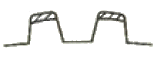
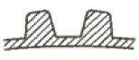
(정답률: 67%)
3과목: 임의 구분
41. 다음 중 강의 담금질성을 시험하는 방법은?
- 죠미니(Jominy) 시험법
- 크피프(Creep) 시험법
- 후겐 베르거형 시험법
- 마르텐스 시험법
(정답률: 91%)
42. 황이 강의 외주로부터 중심부로 향하여 증가하여 분포되고 외주부보다 중심부의 방향에 짙은 농도로 착색되는 편석은?
- 정편석
- 역편석
- 점상편석
- 선상편석
(정답률: 68%)
43. 다음 중 확산이 빠른 것부터 나열된 것은?
- 표면확산＞격자확산＞입계확산
- 표면확산＞입계확산＞격자확산
- 격자확산＞입계확산＞표면확산
- 입계확산＞표면확산＞격자확산
(정답률: 83%)
44. 응력을 완전히 제거하였을 때 재료에 영구변형을 남기지 않는 최대 응력은?
- 상부 항복점
- 하부 항복점
- 탄성한계
- 파단응력
(정답률: 72%)
45. 안전업무분담 중 경영자의 의무가 아닌 것은?
- 근로조건 개선을 통한 작업환경조성
- 산해예방을 위한 기준준수
- 근로자의 안전 보건을 유지
- 산업안전 보건 정책의 수립
(정답률: 79%)
46. 다음 중 베인 펌프에 대한 설명으로 옳은 것은?
- 펌프 출력에 비해 형상 치수가 크다.
- 기어, 피스톤 펌프에 비해 토출압력의 맥동이 적다.
- 베인의 마모에 의한 압력 저하가 발생한다.
- 수명이 짧고, 다시간의 안정된 성능을 발휘한다.
(정답률: 78%)
47. 다음 중 강의 담금질성을 증가시키는 원소로 옳은 것은?
- V
- Co
- W
- Mn
(정답률: 62%)
48. 침투탐상시험에서 후유화제법의 유화제 적용시점은 언제인가?
- 수세 작업 후
- 침투시간이 경과된 후
- 침투제 적용하기 전
- 현상시간이 경과된 후
(정답률: 72%)
49. 비틀림 모멘트를 측정하는 방법이 아닌 것은?
- 펜튜럼식
- 탄성식
- 레버식
- 진동식
(정답률: 65%)
50. 인장시험에서 응력과 변형율이 서로 비례한다는 것은 어떤 법칙인가?
- 후크의 법칙
- 파스칼의 법칙
- 브레밍 법칙
- 관서의 법칙
(정답률: 92%)
51. 서브제로(Sub Zero) 처리에 대한 설명으로 틀린 것은?
- 공구에서 경도 부족의 원인이 되는 잔류오스테나이트를 0℃ 이하의 온도로 냉각하여 마텐자이트로 변태시키는 심냉처리 열처리이다.
- 잔류오스테나이트는 불안정하기 때문에 마텐자이트화하여 팽창 및 변형을 일으키는 경년변화를 방지하기 위한 영하처리 방법이다.
- 오스테나이트화 한 후 기름 중에 급냉하여 마텐자이트화시켜 경화된 조직을 갖기 위한 열처리 방법이다.
- 잔류오스테나이트가 많은 담금질한 강을 상온에서 장시간 방지하면 마텐자이트화가 잘 진행되지 못하므로 0℃이하의 온도로 낮추어야 하며 냉각제로서 액체질소, 액체산소, 드라이아이스 등이 사용되는 열처리이다.
(정답률: 75%)
52. 해수용 복수기용관, 유정관재료, 각종화학공업용 장치로 사용되는 2 상계 스테인리스강에 대한 설명으로 틀린 것은?
- 800∼850℃에서 시그마 상이 석출하므로 열처리 후에 700∼900℃는 가능한 한 급냉하고, 응력제거 열처리도 이 온도 범위에서는 피하도록 한다.
- Ferrite 계에 비하면 인성과 용접부의 내식성은 좋지 않으나 시공성은 좋다.
- Ferrite 계 만큼 응력부식균열에 강하지는 않으나 오스테나이트계보다 저항성이 높다.
- 오스테나이트계에 비하여 강도가 높다.
(정답률: 67%)
53. 다음 중 X-선 회절법으로 알수 없는 것은?
- 결정의 면간거리
- 단위격자의 모양
- 슬립의 변형량
- 원자반경
(정답률: 56%)
54. 다음 중 C-Si의 함량에 따른 주철의 조직분포도를 나타내는 것은?
- 바우싱거분포도
- 경도분포도
- 마우러조직도
- 개재물분포도
(정답률: 58%)
55. 이항분포(Binomial distribution)의 특징으로 가장 옳은 것은?
- P=0일 때는 평균치에 대하여 좌·우 대칭이다.
- P≤0.1이고 , nP=0.1∼10 일 때는 포아송 분포에 근사한다.
- 부적합품의 출현 개수에 대한 표준편차는 D(x)=nP이다.
- P≤0.5 이고 nP≥5일 때는 포아송 분포에 근사한다.
(정답률: 68%)
56. 연간 소요량 4000개인 어떤 부품의 발주비용은 매회 200원 이며, 부품단가는 100원, 연간 재고유지비율이 10%일 때 F. W. Harris 식에 의한 경제적 주문량은 얼마인가?
- 40개/회
- 400개/회
- 1000개/회
- 1300개/회
(정답률: 79%)
57. 제품공정 분석표(Product Process Chart) 작성시 가공시간 기입법으로 가장 올바른 것은?
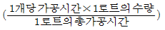
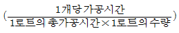
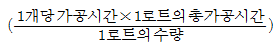
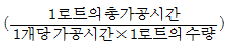
(정답률: 82%)
58. 다음 중 검사를 판정의 대상에 의한 분류가 아닌 것은?
- 관리 샘플링 검사
- 로트별 샘플링 검ㅅ
- 전수 검사
- 출하 검사
(정답률: 74%)
59. “무결점 운동”이라고 불리우는 것으로 품질개선을 위한 동기부여 프로그램은 어느 것인가?
- TQC
- ZD
- MIL-STD
- ISO
(정답률: 95%)
60. M 타입의 자동차 또는 LCD TV를 조립, 완성한 후 부적합수(결점수)를 점검한 데이터에는 어떤 관리도를 사용하는가?
- p 관리도
- nP 관리도
- c 관리도
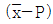
관리도
(정답률: 62%)